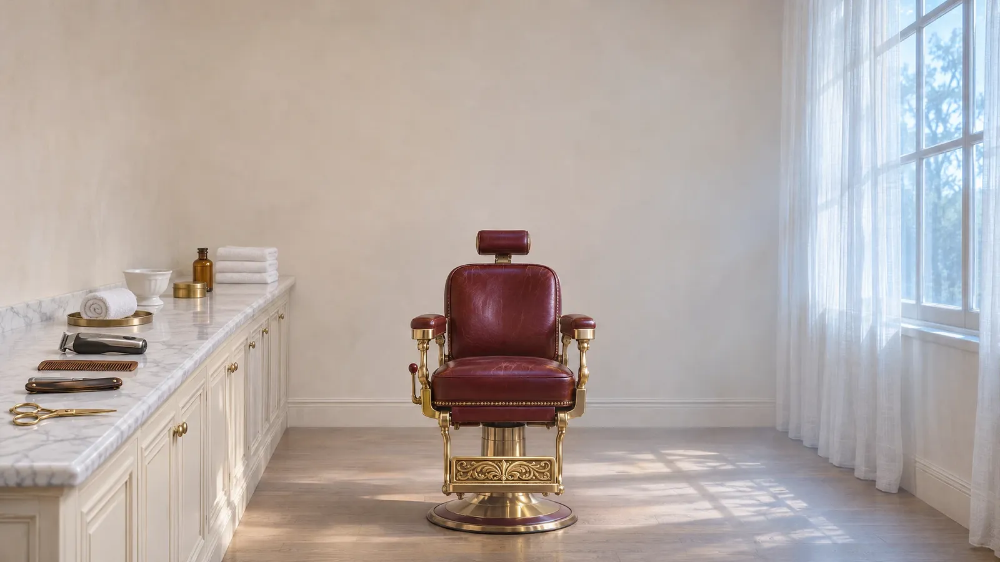
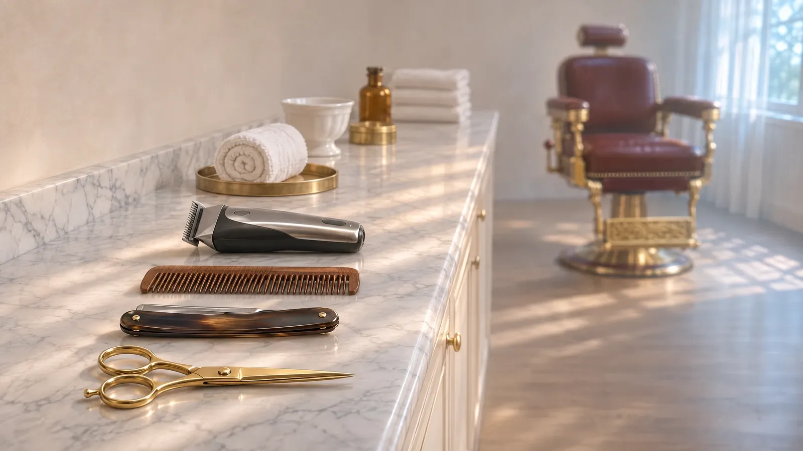
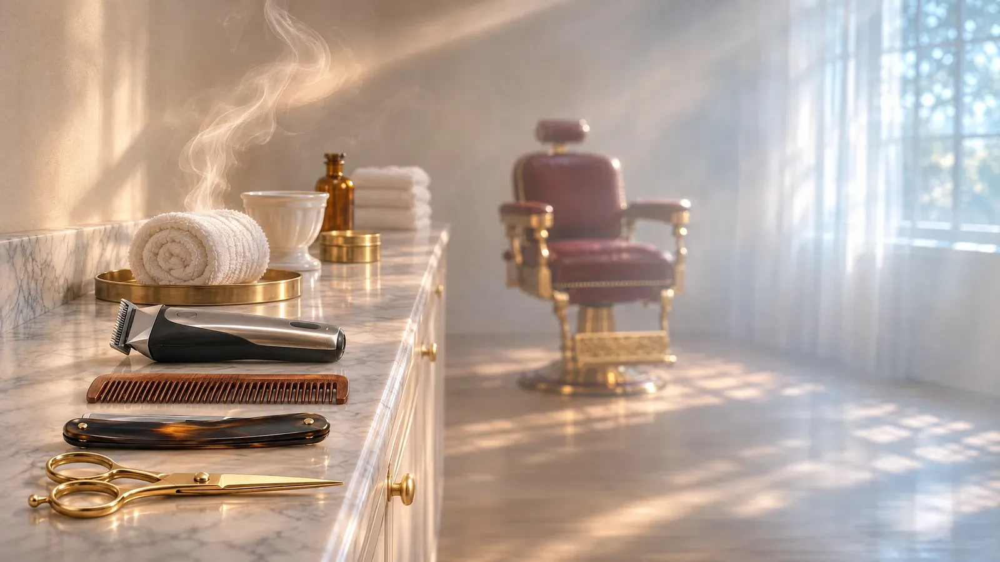
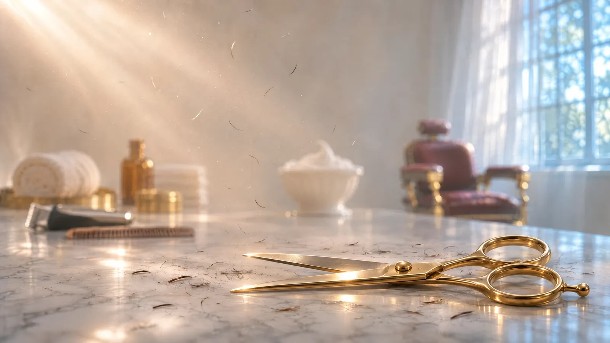
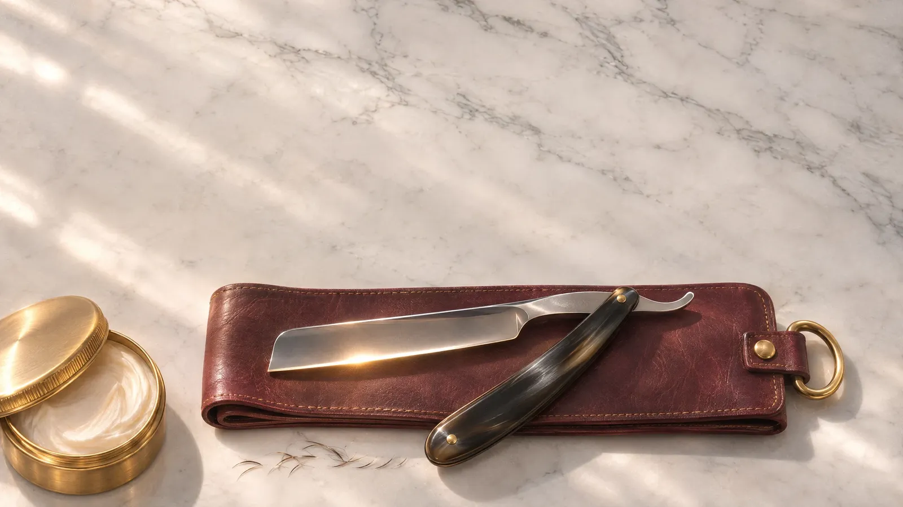
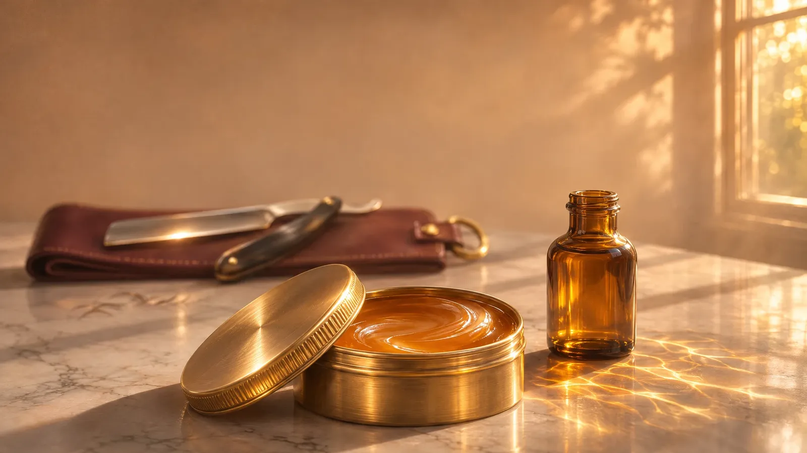

Golden Fingers is een barbershop aan de Grotestraat in Waalwijk. Knippen, fade, baard of een klassieke scheerbeurt — plan je afspraak online, of bel even.
Een barbershop in de ochtend is een stille plek. Licht door het raam, een schone vloer, een stoel die wacht. Zo hoort een dag in een barbershop te beginnen: eerst alles klaar, dan pas de eerste klant.
Ritueel · 02 / 08Gereedschap dat je kunt vertrouwen
Een goede knipbeurt begint bij scherp, schoon gereedschap op een vaste plek. Schaar, scheermes, kam en tondeuse liggen klaar, zodat er tijdens jouw beurt niets gezocht hoeft te worden.
Ritueel · 03 / 08Warmte opent alles
Een warme handdoek is meer dan luxe. De warmte maakt de huid soepel en de baardharen zachter, zodat scheren en trimmen rustiger en gladder gaan. En eerlijk: het is ook gewoon een fijn moment.
Ritueel · 04 / 08Schuim met geduld
Goed scheerschuim is luchtig en romig. Het legt een laagje tussen huid en mes, houdt het vocht vast en laat het mes glijden in plaats van trekken. Zacht beginnen, strak eindigen.
Ritueel · 05 / 08Het echte werk
Met schaar en kam wordt de vorm gebouwd: bovenop wat lengte, opzij korter, alles in verhouding tot jouw gezicht en jouw haar. Niet snel-snel, maar precies. Wat valt, valt op de juiste plek.
Ritueel · 06 / 08De lijn die alles afmaakt
Een nek die strak is uitgeschoren, een baardlijn die klopt, een scherpe overgang bij de slapen. Het zijn de kleine lijnen waardoor een knipbeurt er nog dagen later verzorgd uitziet.
Ritueel · 07 / 08Afwerken zoals jij het draagt
Tot slot wat styling: een beetje pomade of wax, in model gebracht zoals jij je haar morgen zelf draagt. Even kijken, even bijwerken — en je loopt naar buiten zoals je naar binnen wilde: strak.
Ritueel · 01 / 08Sfeerbeeld00:00 / 00:28
Sfeerbeeld
scroll — zo wordt de zaak klaargemaakt

Barbershop · Grotestraat 223
strak geknipt aan de grotestraat.
Golden Fingers is een barbershop aan de Grotestraat in Waalwijk. Knippen, fade, baard of een klassieke scheerbeurt — plan je afspraak online, of bel even.
Een barbershop in de ochtend is een stille plek. Licht door het raam, een schone vloer, een stoel die wacht. Zo hoort een dag in een barbershop te beginnen: eerst alles klaar, dan pas de eerste klant.
Sfeerbeeld

alles op zijn plek.
Schaar, mes, kam, tondeuse. Klaar voor gebruik.
Een goede knipbeurt begint bij scherp, schoon gereedschap op een vaste plek. Schaar, scheermes, kam en tondeuse liggen klaar, zodat er tijdens jouw beurt niets gezocht hoeft te worden.
Sfeerbeeld

warm voor je begint.
Een hete handdoek maakt huid en baard zacht.
Een warme handdoek is meer dan luxe. De warmte maakt de huid soepel en de baardharen zachter, zodat scheren en trimmen rustiger en gladder gaan. En eerlijk: het is ook gewoon een fijn moment.
Sfeerbeeld
zacht als schuim.
Wat glad moet worden, begint zacht.
Goed scheerschuim is luchtig en romig. Het legt een laagje tussen huid en mes, houdt het vocht vast en laat het mes glijden in plaats van trekken. Zacht beginnen, strak eindigen.
Sfeerbeeld

dan de schaar.
Millimeter voor millimeter, tot het klopt.
Met schaar en kam wordt de vorm gebouwd: bovenop wat lengte, opzij korter, alles in verhouding tot jouw gezicht en jouw haar. Niet snel-snel, maar precies. Wat valt, valt op de juiste plek.
Sfeerbeeld

en dan: scherp.
Een strakke lijn zegt meer dan veel woorden.
Een nek die strak is uitgeschoren, een baardlijn die klopt, een scherpe overgang bij de slapen. Het zijn de kleine lijnen waardoor een knipbeurt er nog dagen later verzorgd uitziet.
Sfeerbeeld

de laatste glans.
Een beetje pomade, een blik — klaar.
Tot slot wat styling: een beetje pomade of wax, in model gebracht zoals jij je haar morgen zelf draagt. Even kijken, even bijwerken — en je loopt naar buiten zoals je naar binnen wilde: strak.
Sfeerbeeld
Golden Fingers · Waalwijk
jouw stoel staat klaar.
Aan het eind van het verhaal staat er maar één ding: een lege stoel in het gouden licht. Die is voor jou. Of je nu elke paar weken je fade laat bijwerken, je baard wilt laten modelleren of gewoon weer eens netjes geknipt wilt worden — bij Golden Fingers aan de Grotestraat in Waalwijk zit je goed.
Een afspraak maken hoeft niet ingewikkeld te zijn. Kies wat je wilt laten doen, kies een dag en een tijd, laat je naam en nummer achter. Liever even bellen? Dat kan natuurlijk ook: 06 87 86 26 66.
Een barbier begint niet met de schaar, maar met kijken. Hoe groeit je haar, waar zit een kruin, hoe valt het opzij, hoe ziet je gezicht eruit van de zijkant? Pas als dat duidelijk is, weet je wat er weg moet en wat er juist moet blijven. Daarom begint een goede beurt altijd met een korte vraag: wat wil je, en hoe draag je het normaal?
Daarna is het handwerk. De tondeuse voor de korte zijkanten en een vloeiende fade, de schaar en kam voor de vorm bovenop, het scheermes voor de strakke lijnen in de nek en langs de baard. Elk stuk gereedschap heeft zijn eigen taak, en het verschil zit in hoe ze samenkomen: geen harde randen waar het zacht moet verlopen, geen rommelige lijnen waar het strak moet zijn.
En dan is er de rust. Een barbershop is een van de weinige plekken waar je een halfuurtje niets hoeft. Je telefoon kan even weg, je zit, er wordt voor je gezorgd. Dat hoort net zo goed bij het vak als een scherpe schaar.
Gereedschapslade — tik op een puntSfeerbeeld
Schaar & kam
Voor de vorm bovenop en voor alles wat lengte houdt. Knipt precies en laat haar natuurlijk vallen.
Schaar & kam — Voor de vorm bovenop en voor alles wat lengte houdt. Knipt precies en laat haar natuurlijk vallen. Bekijk: knippen
Tondeuse — Voor korte zijkanten en een vloeiende overgang van kort naar lang: de fade. Bekijk: fade
Scheermes — Voor strakke lijnen in de nek, bij de slapen en langs de baard, en voor een gladde klassieke scheerbeurt. Bekijk: scheren
Kam — Om te scheiden, te meten en de vorm te controleren. Klein ding, groot verschil. Bekijk: knippen
Sfeerbeeld. Welk gereedschap Golden Fingers precies gebruikt, zie je in de zaak.
Diensten
van kort opzij tot glad geschoren.
Een barbershop draait om een paar dingen, en die moeten goed. Hieronder zie je wat je bij een barbier kunt laten doen — de precieze lijst en prijzen van Golden Fingers volgen nog.
Golden Fingers staat al op Fresha — in de echte site koppelen we deze agenda daaraan.
Adres
aan de grotestraat.
Je vindt Barbershop Golden Fingers aan de Grotestraat 223 in Waalwijk. Kom je met de fiets of loop je even binnen tijdens het boodschappen doen? Plan dan vooraf je afspraak, dan staat de stoel klaar als je er bent.
De openingstijden zetten we hier zodra Golden Fingers ze heeft doorgegeven. Tot die tijd: bel even naar 06 87 86 26 66 of kijk op Instagram, daar zie je ook het werk van de afgelopen tijd.

 Sfeerbeeld · voorbeeld
Sfeerbeeld · voorbeeld